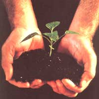
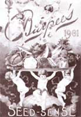

SPRING GARDEN
Get a jump on this season's garden harvest- start your seeds the no-fail way.
Growing plants from seed may seem a bit outmoded. After all, started seedlings are readily available at every nursery, as well as many grocery and department stores. But growing vegetables from seed offers a number of advantages. For one thing, you'll know exactly what you're growing. Store-bought seedlings aren't always clearly identified. For another, your bedding plants will be healthier. Many Store-bought seedlings have weak, spindly stems and most of them have gone through extended periods without water. And then there's the matter of taste. Nearly all of the started plants you'll find in stores are hybrids, the result of deliberately crossing two or more plant varieties. Hybrids are developed to solve the problems of large-scale food production. They produce larger crops, they ripen all at once for mechanical harvesting, and they have tough skins that hold up well during long-distance shipping. Notice that flavor is nowhere near the top of the list.
We gardeners, on the other hand, like fresh vegetables for their tenderness and good flavor. We prefer extended harvests that give us fresh produce over a long period of time and that don't require marathon canning sessions. In short, we prefer standard (non-hybrid) varieties. Standards are rarely available as started plants, but instead must be grown from seed.
When you start from seed, you have another advantage over planting seedlings-you can sprout the seeds indoors to get a jump on the season for an earlier harvest. If your growing season is short, planting indoors buys time for slow-growing varieties that otherwise may not mature before fall's first frost-eggplant, peppers, and tomatoes among vegetables; impatiens, petunias, and snapdragons among flowers. And if your climate, like mine, goes too quickly from frigid to sizzling, cool-weather Cole crops (cabbage, broccoli, and cauliflower) started indoors can be handily harvested before the onset of summer heat.
Compared to seeds planted outdoors, those started indoors have a better germination rate because they're pampered more. You can enjoy greater variety by planting just a few pots of several different things, then selecting only the healthiest plants for transplanting. But the real reason we die-hard gardeners like to start seeds indoors is that it lets us get dirt under our fingernails long before the soil is warm enough or dry enough to garden outdoors.
To start your own indoor nursery, here's what you'll need:
Seeds. Decide what you want to grow and purchase the seeds in plenty of time. Mail-order houses offer the widest variety of seeds, and will supply them when you want them. (For tips on buying by mail, see "Mail-Order Mania" in issue #135.)
Containers. Those of us who enjoy indoor planting invariably set up in-house recycle centers tilled with milk cartons, potato-chip tubes, juice cans, yogurt containers, and anything else that's at least 3" deep. The best planting containers are either tapered-like yogurt containers-so plants can easily be slipped out, or are made of paper-like milk cartons and juice cans-so they can be torn open for plant removal. Flats (shallow trays) may offer more planting space than individual pots, but you're more likely to disturb tender roots at transplant time.
To prepare containers for planting, wash them well, rinse in warm water laced with a little chlorine bleach, and dry them in the sun. With a nail, poke one or more small drainage holes in the bottoms of all containers so you won't drown your seedlings. If money is no object, save yourself the bother of cleaning containers by buying pots designed specifically for sprouting seeds. Seedlings started in pots of pressed fiber or peat can be planted in the garden, pot and all. Some seed -starting kits come with their own planting mix.
Planting mix. Seeds sprout best in soil that drains well, that doesn't easily compact, and that's free of competing weed seeds, fungi, and other organisms that can disease young plants. Sterile planting mixes, available at any garden center, are relatively inexpensive. If you buy a mix containing soil, be sure the label says it's been sterilized.
Most mixes blended especially for germinating seeds contain no soil at all, but are a mixture of sphagnum moss (decomposed moss mined from swamps), perlite (a form of volcanic ash), and vermiculite (mica expanded with heat, like popcorn). This blend holds water well, but is difficult to initially moisten. To dampen it sufficiently for planting, put some into a plastic bag, add water, and knead. Because this mixture is low in nutrients, you'll have to fertilize seedlings from the time they achieve three weeks' growth, using half the strength solution you'd use for mature plants.
If you run out of planting mix at a crucial moment, or you prefer not to spend money on someone else's mix, you can make your own by combining equal parts sphagnum moss (available from most garden centers), sifted compost, and sifted garden soil. To eliminate soil-borne organisms that cause plant problems, pasteurize the sifted soil and compost by lightly moistening it and heating it in a 180°F oven for 45 minutes. Since cooking soil doesn't exactly smell like freshbaked bread, place the mix in a broiler bag (of the sort you'd use to cook a turkey) and spread it on a shallow tray. Stir in the sphagnum moss and cool well before planting.
Labels. Since newly sprouted plants look pretty much alike, labels will help you keep track of what's what. If something doesn't come up and needs replanting, you won't have to guess what it was. You can buy bona fide nursery labels, save up popsicle sticks, or make labels by cutting a liquid bleach container into 1/2" vertical strips and trimming a point at one end. Some planting containers (like containers from yogurt, cottage cheese, and sour cream) are easy to write on with an indelible marker, eliminating the need for separate labels.
Light. Plants started in a window sill soon grow leggy and topple over-perhaps because, at this time of year, the sky stays cloudy for days on end. A light for your seedlings therefore makes a good investment and can be used year after year. You might enjoy the prestige (and expense) of a specially designed "grow" light, but you'll get the same good results with inexpensive fluorescent tubes and a fixture from the local discount store.
Cool white ("daylight") 40-watt tubes throw even light of the sort plants thrive on, and they don't get hot enough to burn tender leaves. Select a fixture (or combination of fixtures) that's the right size to cover all your pots, placed directly below the light. Hang the fixture from chains so that you can raise it as plants grow, keeping the light about 1" above plant tops.
Warmth. Most seeds germinate best in a warm, draft-free place. Where the temperature is a little high, plants will grow fast and become leggy. Where the temperature is a little low, plants will grow slowly and have strong, sturdy stems; however, if the temperature is too low, seeds won't germinate at all. If the area where you plan to start your seeds is much cooler than 70° to 75°F, find a warm place such as the top of the water heater or refrigerator. After the seeds germinate, place the pots under the light.
Now all you need to know is the date of the last expected frost in your area. If you aren't sure, call your county's agricultural extension office. Start seeds for slow-growing plants like cabbage, eggplant, head lettuce, peppers, and tomatoes eight weeks before the last-frost date. Start fast-growing plants like Chinese cabbage, cucumbers, melons, pumpkins, and squash four weeks before the last frost. You don't want fastgrowing plants to outgrow their pots and get root-bound while you wait for your garden soil to warm up or dry out enough for transplanting. As a general rule, it's better to start seeds a little too late than a little too early.
Fill each container with planting mix to within V," of the top. Press the mix gently to firm it up without packing it solid. In each container, arrange two large seeds (such as cucumber, squash, or pumpkin) or three small seeds (such as tomato or cabbage). If small seeds stick to your fingers and are hard to place, pick them up with tweezers.
Cover large seeds with soil to no more than three times their thickness. Press small seeds into the soil without covering them, since otherwise they might get buried too deeply to germinate. To avoid washing the planting mix away from the seeds, water the pots with a spray bottle filled with warm water. To keep the soil from drying out, lay a piece of newspaper across the tops of the containers.
Water the pots daily, taking care to not let the soil get too soggy or dry. Different seeds take different amounts of time to germinate. The label on your seed packets should tell you the germination times for the varieties you plant. As soon as little green sprouts appear, remove the newspaper and turn on the grow light. Turn the light off each night to give plants a rest. Continue watering daily so soil stays evenly moist.
When plants have four true leaves (not counting those first nondescript round leaves all plants start out with), thin plants to one per pot. Don't pull out the weak plants or you'll disturb the roots of the remaining plant. Instead, use scissors to snip off all but the strongest single plant in each pot. Water a little less often from now on, allowing the soil's surface to dry out between waterings.
Before your plants get big enough for the great outdoors, they should be transplanted into larger pots at least once. Transplant peppers and tomatoes twice. Any plant needs transplanting if it outgrows its pot while you're waiting for conditions outside to be right for the big move. Putting plants in bigger pots stimulates root growth, thanks to new soil with fresh nutrients and greater room for roots to spread.
Whenever you transplant a seedling, make sure to thoroughly water it first. Then run a butter knife around the edge of the pot to loosen the root ball. Hold the pot in one hand and tip it upsidedown onto your other hand, so the root ball lands on your fingers and the plant falls between them. (If you planted in fiber or peat pots, break away the bottom so roots can get through, then replant the pot and all.) Add enough planting mix to bury the stem up to the first true leaves. Press the mix firmly around roots and then water the plant once more. Transplants may droop but should grow upright within a day or two.
When the time comes to move your plants outdoors, avoid an abrupt move that will shock them and retard their growth. Instead, let your plants gradually adjust to being outside through a process called "hardening off." One week before transplant time, place the seedlings outdoors in a shady spot that's protected from any wind. If the nights are still cool, bring the plants inside before the sun goes down. Gradually move the plants until they're getting full sun during the day. (Watch that the sun or wind doesn't dry them out-you may have to water more often than you have been.)
Cool-weather varieties such as sole crops may be moved to the garden as soon as the soil can be worked and the danger of heavy frost is over. Warm-weather plants like tomatoes shouldn't go out until all danger of frost has past.
If you have seeds left over, they will keep for at least a year. Some can be stored for up to five years, provided you keep them in airtight containers in a cool, dry place.
You might even save seeds from plants you grow yourself, provided that they're standards rather than hybrids. Hybrids cannot be grown from seeds you gather yourself, but must be purchased year after year (another reason commercial growers favor them). If you harvest seeds from a hybrid, they will not grow true to the parent plant. Instead, they'll likely either be sterile or will revert to one or another of the plants in their background.
Standard varieties grow true to type as long as they have not inadvertently been crossed with related plants growing nearby. Saving your own seeds gives you a certain sense of satisfaction, as well as a modicum of self-sufficiency. It also helps preserve old-time varieties. Of the vegetables cataloged by the USDA in 1902, only 3% still exist today. The rest have been replaced by hybrids.
Note: Every year at this time, Gail Damerow converts he r sewing morn into a snug seedling nursery.
The New Seed-Starter's Handbook, by Nancy Bubel ($14.95, Rodale Press, 33 East Minor Street, Emmaus, PA 18098): a how-to guide to starting vegetables, fruits, flowers, herbs, trees, and shrubs from seed.
Garden Seed Inventory, by Ken Whealy ($22 postpaid, Seed Saver Publications, Route 3 Box 239, Decorah, IA 52101): inventory of seed catalogs listing nonhybrid vegetable seeds available in the United States and Canada.
Saving Seeds, by Marc Rogers ($12.70 postpaid, Storey Publishing, 800/4415700): gardener's guide to growing and storing vegetable and-flower seeds.
Seed to Seed, by Suzanne Ashworth ($20 postpaid, Seed Saver Publications, Route 3 Box 239, Decorah, IA 52101): seed saving techniques for the vegetable gardener.
The best time to move seedlings to the garden is on a warm, windless, cloudy day when light showers are predicted. Unfortunately, the weather doesn't always cooperate. Chilly nights, not to mention the drying effects of wind and sun, can quickly wipe out all those little plants you tended so carefully.
Garden centers carry protective devices, called "hotcaps," of every shape, size, and especially price. To save money, you can protect seedlings with large mills cartons, inverted cans, or anything else big enough not to touch a plant's leaves. Hotcaps hold in heat during the night, but in sunny weather they must be removed during the day so they won't collect the sun's heat, cooking new transplants.
If you've got lots of little plants, setting out hotcaps each evening and gathering them up each morning gets to be a hassle. And while the hotcaps are off, seedlings have no protection from wind and unrelenting sun. Pondering these problems, my husband and I hit on the idea of fashioning plant protectors from white plastic trash-bag liners. We slit the bottoms open and cut each 20" by 28.5" liner into three 20" x 9.5" strips. We used our food-pouch heat sealer to form tubular pockets along the two folds. Into the tubular pockets we slipped two slender stakes, which we poked into the ground as an anchor.
We used a third stake to pull the plastic out into a right angle corner, creating a protector with two walls oriented to shield a plant from both sun and wind. In seasons when the wind whipped around from several directions, we opened up the plastic and added a fourth stake to create a box with four walls. 'these plastic protectors could be reused several times in one season, but they don't hold up well enough to be stored for future seasons. To us, that seemed a tad wasteful.
So we looked around for something that could be saved year- after year and discovered fiberglass sheeting, a recycled product left over from the manufacture of paper and used to shield gamebirds from wind. The fiberglass comes in rolls of various widths-the 2' roll turned out to be ideal for protecting plants.
Using scissors, we cut the fiberglass into 1' strips, fashioned each strip into a 1' high tube stapled to two wooden stakes. When the stakes are pushed into the ground on either side of a plant, the tube surrounds the plant and protects it from all directions. The white fiberglass does not collect and hold excess heat, and is porous enough to allow air movement but not drafts.
Fiberglass is durable and does not rot or rip. The protectors can easily be threaded onto a length of rope and hung from the rafters of a storage shed. A 2' wide roll containing 100 feet costs $30, but you can buy only as much as you need. Fiberglass sheeting is available from Len Leberg, Thunderbird Game Farm, Box 23119, Thunderbird Rd., Chilton, WI 53014 (414/853-3030).
Both the one-season plastic protectors and the more durable fiberglass kind will keep plants warm throughout the night unless unseasonable frost threatens. In that case, slip a paper bag over each protector late in the afternoon, before the sun goes down. In blowing wind, put a small stone or dirt clot on each bag to keep it from blowing away. Avoid trapping excess heat by removing bags in morning soon after the sun comes up.
|
 Sprouting seeds indoors allows you to get a jump on the season for an earlier harvest. |
 Mail-order houses offer the widest variety. |
|